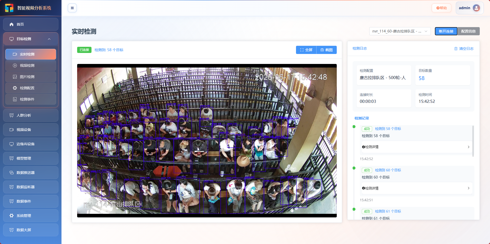
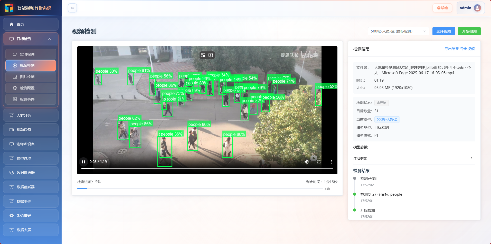

3. 目标检测
3.1 实时检测
进入"实时检测"页面

图3.1 实时检测页面
选择要检测的设备
选择检测模型
点击"开始检测"按钮
注意：实时检测需要先配置检测参数，包括检测区域、目标类别、灵敏度等。
3.2 视频检测
进入"视频检测"页面

图3.2 视频检测页面
选择要检测的视频文件
选择检测模型
点击"开始检测"按钮
3.3 图片检测
进入"图片检测"页面

图3.3 图片检测页面
选择要检测的图片文件
选择检测模型
点击"开始检测"按钮
3.4 检测配置
进入"检测配置"页面

图3.4 检测配置页面
选择要配置的设备
设置检测参数：
- 检测区域：可以设置检测范围
- 目标类别：选择需要检测的目标类型
- 灵敏度：调整检测的灵敏度
- 保存模式：选择检测结果的保存方式
点击"保存"按钮完成配置
3.5 检测事件
进入"检测事件"页面

图3.5 检测事件页面
可以查看所有检测到的事件
支持按设备、时间、事件类型等筛选
可以查看事件详情，包括截图、视频片段等
支持导出事件数据